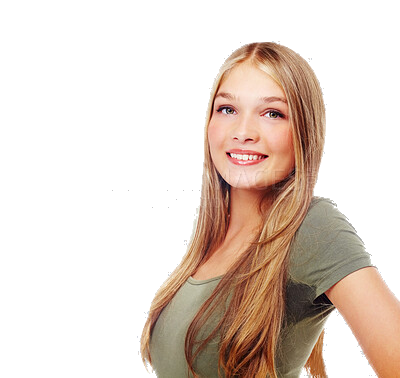

New student · 20
Hi — I’m Lena.
I like people. I am optimistic, I have a lot of sympathy, and I am happiest when a first conversation turns into a friendship. If you care to know me, I would be glad to know you too.

Who I am
Warm, open, and easy to sit next to.
People usually meet the smile first. I am twenty, just starting out as a student, and I still collect firsts on purpose. I wave first. I listen. I remember the small things you mentioned in passing.
-
Optimistic
I look for the good in a day and in a person — not because I ignore hard things, but because hope leaves room for them.
-
Soft-hearted
I have a lot of sympathy. If you are having a quiet, difficult day, I will notice. I would rather sit with you than offer empty advice.
-
Social
New classmates, coffee after lecture, a walk with someone I just met — that is where I feel most alive. I like rooms that fill with conversation.
A bit more
I am trying to be kind, present, and real.
I am curious about other people’s stories. I ask questions. I do not rush to judge. I would rather understand someone than win a point. Once I care about you, I show up.
I laugh easily. I celebrate small wins, because small wins are how a life is built. I am still finding my rhythm as a student, and I like that unfinished place: interested, open-hearted, and glad to make the extra chair feel like it was always meant to be there.
Be the person who waves first. Listen as if the other person might change your mind. Leave people feeling a little more seen than before.
Connect
If you care, I am here.
I am glad you read this far. Write to me, say hi on campus, or send a message — I like beginnings.
- hello@example.com Email
- @lena Instagram